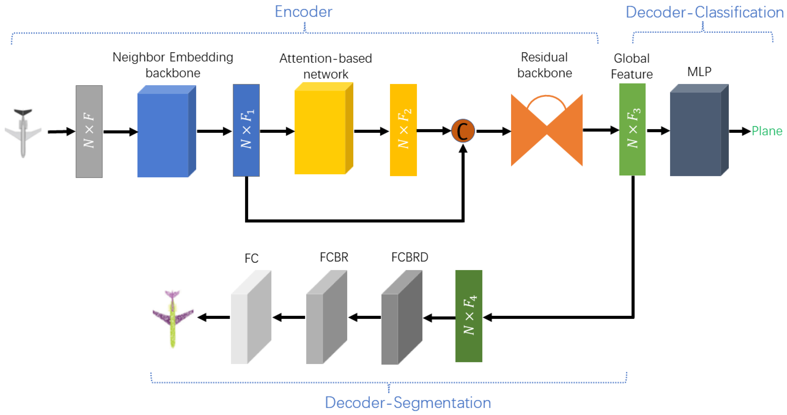
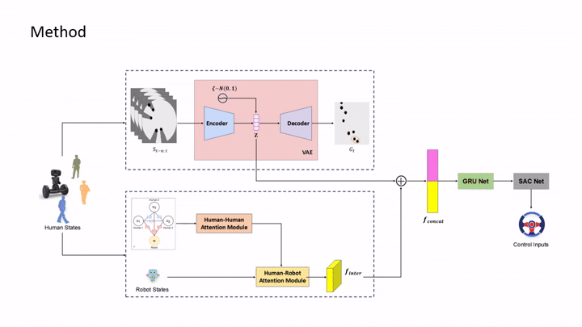

Luyao Liu (刘路瑶)

Email: liuly2023@mail.sustech.edu.cn
I am a second year master student in the Department of Electronic and Electrical Engineering at Southern University of Science and Technology. Now, I am a graduate researcher at Robotics and Perception Group (RCV Lab) advised by Prof. Hong Zhang (IEEE Fellow).
My research interests focus on designing algorithms to help robots handle environmental disturbances and model uncertainty. I aim to enpower robotic systems to dynamically adapt environment changes in real-time and learn continuously in real-world scenarios, utilizing methodologies from both the learning and control communities.
News
| Jun 6, 2025 | My personal homepage is released! |
|---|---|
| Jan 29, 2025 | Our work “Dynamic Perception-Enhanced Motion Planning and Control for UAVs Flights in Challenging Dynamic Environments” is accpeted by ICRA 2025. |
| Sep 1, 2023 | I join in Robotics and Computer Vision Lab (RCV Lab) as a graduate researcher. |
Publications
 | 2025 IEEE International Conference on Robotics and Automation (ICRA 2025) |
|  | Machines, 2022 |
Projects
|  | We proposed a novel robot crowd navigation method that simultaneously considers pedestrian interactions and visual occlusions. The policy is trained using the Proximal Policy Optimization (PPO) algorithm and evaluated in the crowd_sim simulation environment. |
 | We adopted a two-stage strategy to train a policy network for legged robot locomotion using reinforcement learning in Isaac Gym. It is capable of agile locomotion in a variety of complex environments. |
 | Completed during my undergraduate studies, this project involved the design of a ROS-based intelligent mobile robot equipped with fall detection, object detection, mapping, and autonomous navigation capabilities. |
 | This project was completed during my undergraduate studies. We fully DIY-ed a vision-based tennis ball picking robot, using the K210 for ball detection and the STM32 as the control module. |
Acadamic Service
- Journal Reviewer IEEE Signal Processing Letters (SPL), Neurocomputing
- Conference Reviewer: 2025 IEEE International Conference on Robotics and Automation (ICRA 2025)
Honors
- National Encouragement Scholarship
- The Special Prize Graduate Scholarship at Southern University of Science and Technology
- The First Prize Graduate Scholarship at Southern University of Science and Technology
- Merit Student of Zhengzhou University
- The First Prize of Outstanding Student Scholarship at Zhengzhou University
- The Second Prize of National Undergraduate Electronic Design Contest (Top 5%)
- The Second Prize of CHINA ROBOT COMPETITION (Top 10%)
Life is waiting us to explore more. Let's keep moving.